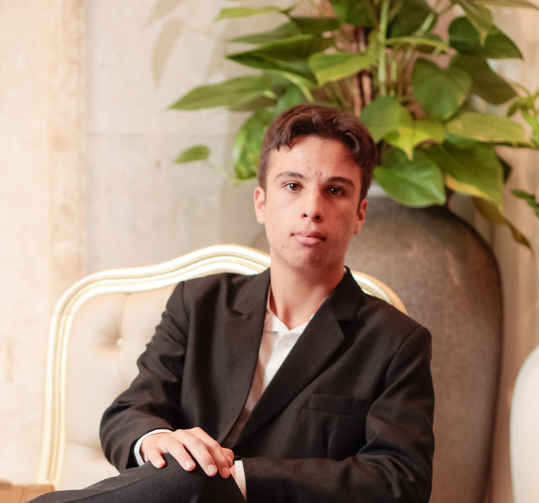

Web & apps
Construção de interfaces e aplicações com tecnologias modernas.
disponível para oportunidades
Olá, eu sou Lucas. Desenvolvedor de Sistemas junior, formado pelo SESI/SENAI, com paixão por criar soluções funcionais, aprender sempre e evoluir através de projetos reais.

Formado no Ensino Médio Técnico em Desenvolvimento de Sistemas, durante minha formação participei da preparação para a WorldSkills — uma experiência que fortaleceu minha lógica, disciplina e vontade de construir.
↘toolkit
Uma base técnica em crescimento contínuo, sempre conectando fundamentos sólidos a novas possibilidades.
Construção de interfaces e aplicações com tecnologias modernas.
Organização de informações e raciocínio para resolver problemas.
Ferramentas que tornam o desenvolvimento mais claro e colaborativo.
Competidor na etapa estadual, vivenciando desafios práticos de desenvolvimento sob pressão e colaboração.
SESI/SENAI · Campo Largo/PR
selected work
próximo capítulo
Estou buscando minha primeira oportunidade no mercado para aplicar o que aprendi e continuar evoluindo tecnicamente.
novo projeto